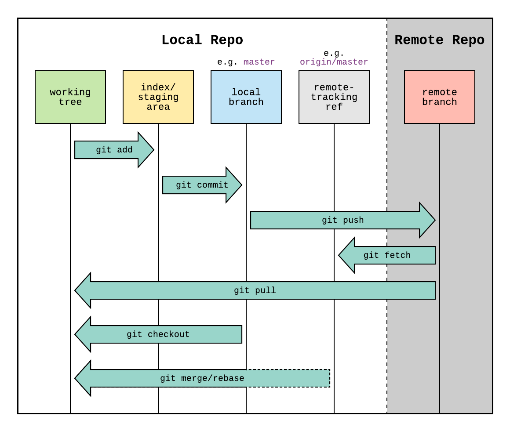

Using Git
What is Git?
Git is a version control system that allows you to track changes in your code. It is a distributed version control system, which means that you can work on your code locally and then push your changes to a remote repository. This is useful for collaboration, as multiple people can work on the same codebase without interfering with each other's work.
Why use Git?
- Keep track of changes in your code.
- Collaborate with others.
- Easily revert to previous versions of your code.
- Keep your code safe and secure.
How to use Git
Installing Git
To install Git, go to the Git website and download the appropriate version for your operating system. Follow the installation instructions to install Git on your machine.
Setting up Git
Once Git is installed, you need to configure it with your name and email address. Open a terminal window and run the following commands:
Integrated Git Support for Visual Studio 2022
Visual Studio 2022 has built-in support for Git, which makes it easy to manage your code using Git. To enable Git support in Visual Studio 2022, follow these steps:
- Open Visual Studio 2022.
- Open
Git. - Open
Settings. - Here you can configure your Git settings, such as your name and email address as we did in the previous step.
- You can also configure other settings, such as default location and manage remote branches etc.,
- You will have access to almost all git commands in the Visual Studio 2022 UI but you can also use the terminal to run git commands.
Git Commands
Here are some common Git commands that you will use when working with Git:
git init: Initializes a new Git repository in the current directory.git add .: Adds all files in the current directory to the staging area.git commit -m "Commit message": Commits the changes in the staging area with the specified commit message.git status: Shows the status of the current repository, including which files are staged, modified, or untracked.git log: Shows the commit history of the repository.git push: Pushes the changes in the local repository to the remote repository.git pull: Pulls the changes from the remote repository to the local repository.git clone: Clones a remote repository to the local machine.
Git Workflow
Here is a typical Git workflow diagram.
Diagram Representation

Local Repository
Working Tree
- Description: This is your local working directory where you make changes to your files.
- Commands:
git add: Moves changes from the working tree to the staging area.
Index/Staging Area
- Description: The staging area holds changes that are ready to be committed.
- Commands:
git commit: Records changes from the staging area to the local branch.
Local Branch
- Description: This is your local branch where commits are recorded.
- Commands:
git push: Sends committed changes from the local branch to the remote repository.git checkout: Switches between branches in your local repository.git merge/rebase: Integrates changes from one branch into another.
Remote Repository
Remote-Tracking Ref
- Description: This is a reference to the state of branches in the remote repository.
- Commands:
git fetch: Retrieves updates from the remote repository without integrating them.git pull: Fetches updates from the remote repository and merges them into the local branch.
Remote Branch
- Description: The branch in the remote repository (e.g.,
origin/master).
Commands Summary
git add: Adds changes to the staging area.git commit: Commits changes to the local branch.git push: Pushes changes to the remote repository.git fetch: Fetches updates from the remote repository.git pull: Fetches and merges changes from the remote repository.git checkout: Switches branches.git merge/rebase: Merges or rebases branches.
Workflow Steps
- Make changes in your working tree.
- Stage changes using
git add. - Commit changes to your local branch with
git commit. - Push changes to the remote repository using
git push. - Fetch updates from the remote repository using
git fetch. - Pull updates and merge them into your local branch with
git pull. - Switch branches using
git checkoutas needed. - Merge or rebase branches using
git merge/rebase.
Writing Good Commit Messages
When writing commit messages, follow these guidelines:
- Keep the subject line concise (50 characters or less).
- Use the imperative mood (e.g., "Add feature" instead of "Added feature").
- Structure your commit message with a type and subject line:
- feat : a new feature is introduced with the changes
- fix : a bug fix has occurred
- chore : changes that do not relate to a fix or feature and don't modify
srcor test files (e.g., updating dependencies) - refactor : refactored code that neither fixes a bug nor adds a feature
- docs : updates to documentation, such as the
READMEor other markdown files - style : changes that do not affect the meaning of the code, likely related to code formatting (e.g., whitespace, missing semi-colons)
- test : including new or correcting previous tests
- perf : performance improvements
- ci : continuous integration-related changes
- build : changes that affect the build system or external dependencies
- revert : reverts a previous commit
- The commit type and subject line should be all lowercase, with a character limit to encourage succinct descriptions.
- Provide more details in the body if necessary.
- Reference issues or pull requests if applicable.